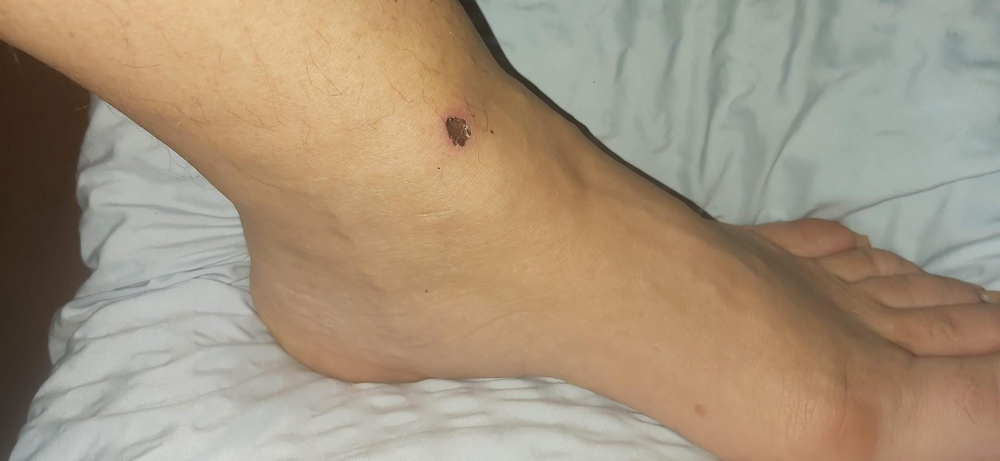

Andrii Mikhalov, dokumentacja medyczna
Andrii Mikhalov, dokumentacja medycznaObjawy i dolegliwości
Zdolność do pracy
- Po około 30 minutach pracy muszę leżeć około 2 dni. Po 2-3 godzinach pracy muszę leżeć około tygodnia.
- Nawet godzina przy biurku zmusza mnie do leżenia, aż ustąpi ból o charakterze ucisku.
- Nie toleruję długiego stania, siedzenia ani podróży. Ból narasta i ustępuje powoli, nawet do tygodnia.
Lewa noga i miednica
- Przewlekły ciągnący i kłujący ból w lewym dolnym brzuchu, głęboko pod blizną z 1997 roku, promieniujący do dolnej części pleców.
- Ból wędruje: może być w lewym dolnym brzuchu, nodze, pośladku, pachwinie lub lewej dolnej części pleców.
- W lewej nodze podczas chodzenia narasta uczucie rozpierania.
- Palpacja lewej okolicy pachwinowej i mosznowej wywołuje silny ból trwający dniami.
- Ból jest silniejszy na zimnie i w nocy. Wyraźnie narasta, gdy długo stoję, siedzę lub pozostaję w bezruchu.
Chodzenie i kolana
- Chodzenie powoduje wyraźne ograniczenie podparcia i ruchu, z utykaniem.
- Chodzenie około 2 km lub noszenie wiadra z wodą nasila ból.
- Od artroskopii prawego kolana w 2024 roku prawe kolano ustępuje po jednym lub dwóch kilometrach.
- Na konsultacji ortopedycznej w Odrex w 2024 roku odnotowano złożoną przykurcz prawego stawu kolanowego (wyprost 175, zgięcie 130) z zaleceniem ograniczenia obciążenia fizycznego prawego kolana.
- Uczucie rozpierania w lewej nodze i ustępowanie prawego kolana to osobne dolegliwości.
Inne
- Nos: parestezje (swędzenie) po lewej stronie od dwóch lat, stałe uczucie ciężkości; w nocy i na zimnie nos po lewej nie oddycha. Szczegóły: Nos i zatoki.
- Oczy: ból w prawym oku. W ciemności mam wyraźne fotopsje, jasne błyski światła wyraźnie zsynchronizowane z ruchami gałki ocznej. Wywiad: krótkowzroczność średniego stopnia skorygowano w 1999 roku metodą LASIK. Profilaktyczną laserową koagulację siatkówki obu oczu wykonano w 1999 roku. Podczas badania kontrolnego w 2002 roku ostrość wzroku wynosiła 1,0 w obu oczach (konkluzja ośrodka laserowej korekcji wzroku Tarus przy Instytucie Filatowa, Odessa).
Zdjęcie

Życie i praca
Od młodości nie jestem w stanie pracować długo ani dużo; teraz to ograniczenie jest najsilniejsze. Z powodu bólu od lat jestem zmuszony powstrzymywać się od intymności. Całe życie marzyłem o rodzinie i dzieciach, a leczenie jest moją szansą na to. Na przykład w International Rescue Committee, najciekawszej dla mnie międzynarodowej pracy w języku angielskim, poproszono mnie o zwolnienie pokoju socjalnego kierowców na czas spotkań. Napisałem do przełożonego, że z powodu choroby żylnej nie mam siły długo stać na nogach na korytarzu, czekając na koniec spotkania. Tę pracę straciłem z powodu choroby żylnej i niemożności długiego stania. Poza tym ta praca mi odpowiadała: potrafię prowadzić samochód, porozumiewać się po angielsku i bez problemu poznać wszystkie zasady. Ostatnią pracę w firmie zaopatrującej statki (ship chandler) zostawiłem z powodu zaostrzenia tej choroby, choć miałem perspektywę zostania zastępcą założyciela firmy we wszystkich obszarach i faktycznie już pracowałem w biurze. Wtedy zaczęły mnie też boleć kolana, ale zaproszono mnie do pracy w biurze, a tam kolana nie przeszkadzały; praca przy komputerze była niemożliwa z powodu zastoju żylnego.
← Wstecz